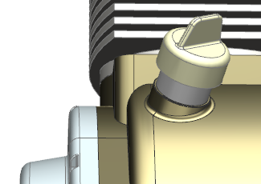
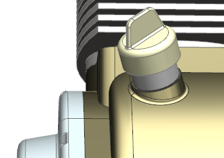
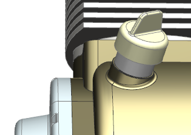
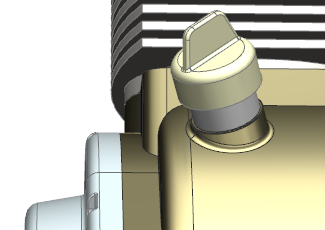

编辑特征参数
汽油过滤器的颈部与油帽有装配约束关系，当汽油过滤器的凸台面移动时，这些组件也将跟随移动，在现在这种结构下，由于汽油过滤器指向内侧，因此向发动机中加油变得很困难，。

-
在部件导航器中的模型历史记录节点下方，双击列表中的最后一个移动面特征以打开进行编辑。
-
在移动面对话框的变换组中，单击反向
 以使汽油过滤器的凸台面指向外侧，从而远离箱体。
以使汽油过滤器的凸台面指向外侧，从而远离箱体。 -
点击确定。

汽油过滤器的颈部与油帽有装配约束关系，当汽油过滤器的凸台面移动时，这些组件也将跟随移动，在现在这种结构下，由于汽油过滤器指向内侧，因此向发动机中加油变得很困难，。

在部件导航器中的模型历史记录节点下方，双击列表中的最后一个移动面特征以打开进行编辑。
在移动面对话框的变换组中，单击反向  以使汽油过滤器的凸台面指向外侧，从而远离箱体。
以使汽油过滤器的凸台面指向外侧，从而远离箱体。
点击确定。
